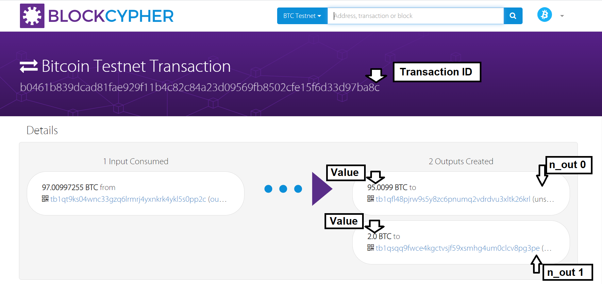

Cold Signer
All you need to create a bitcoin transaction is (3) things:
- the transaction ID,
- output position (vout) and;
- value.

After building the transaction it is not valid unless signed with the assoicated address' WIF private key. After signing, the transaction can be broadcast to the network.
Step one obtain UTXOs from address you which to spend.
Auto Fetch tools (internet required): Source A | Source B
Manually obtain and enter transaction ids, v_out(aka n_out), and input values. Use the JSON template below.
Example with One Input:
Example with Two Inputs:
Step 2 - Build and Sign Transaction
Make sure you have the inputs in JSON format either by using the auto-fetch tool or be manually entering the data in a JSON format.
Paste the JSON formatted text in the appropiate signing tool.
If spending from a legacy address (Starts with a 1) - offline-sign-legacy.html
If spending from a p2sh segwit address (Starts with a 3) - offline-sign-p2sh-segwit.html
If spending from a native segwite (bech32) address (Starts with a bc) - offline-sign-bech32.html
Step 3 - Broadcast
You can broadcast from your own node as long as your node is synced up to at least the height of the input you are spending.
You can also broadcast with a 3rd party service (Blockcypher, Smartbit Testnet | Mainnet, Blockstream Testnet | Mainnet